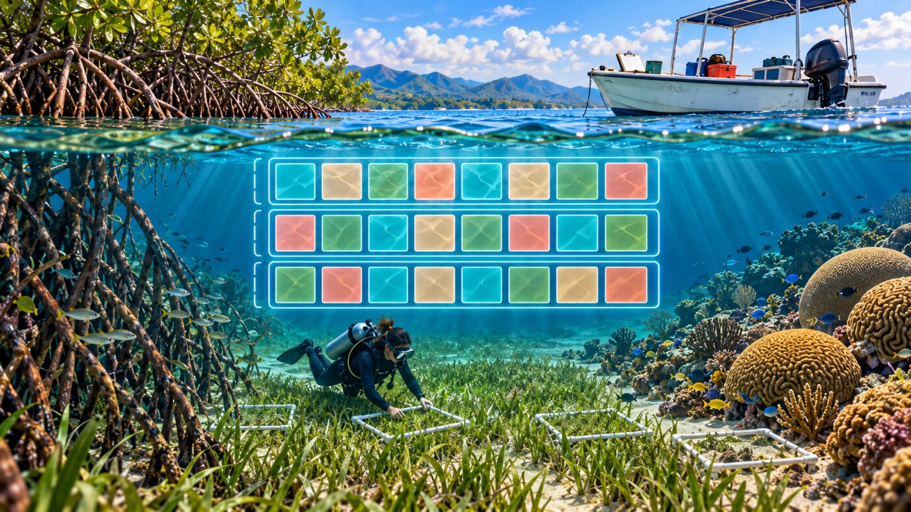
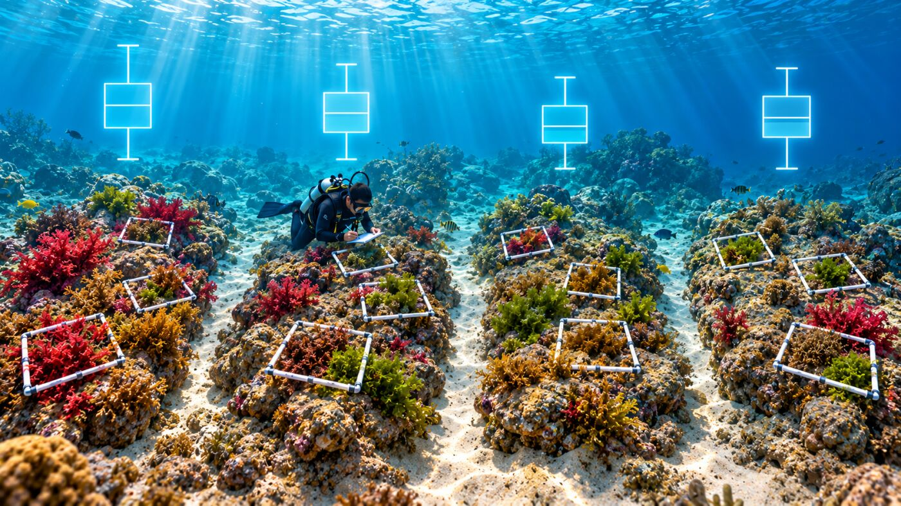
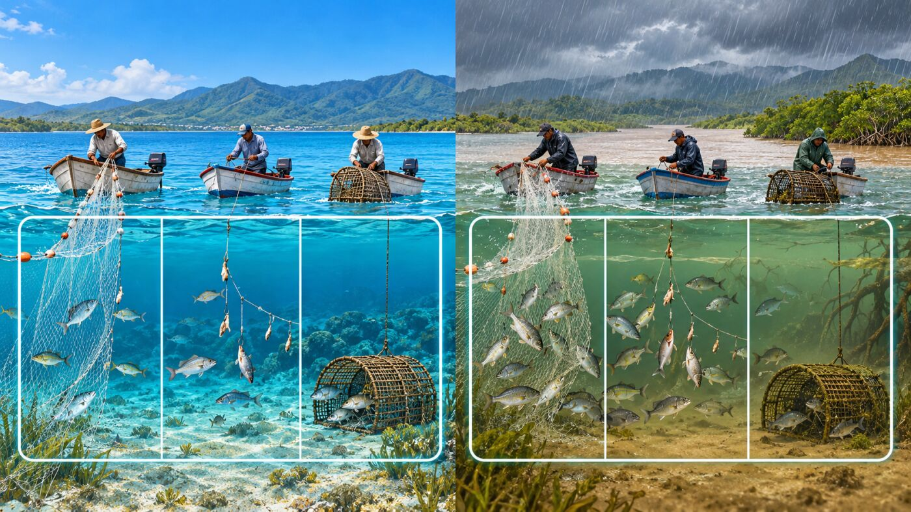
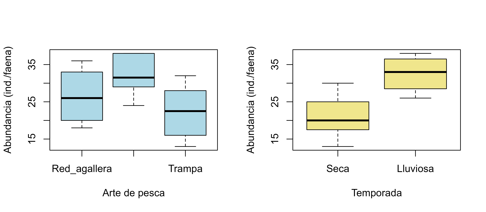
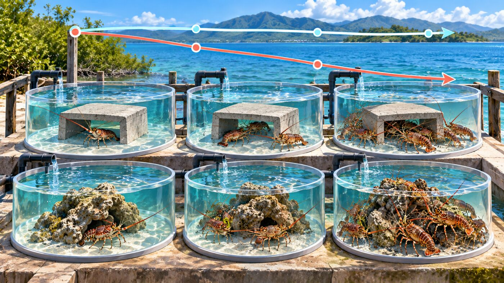
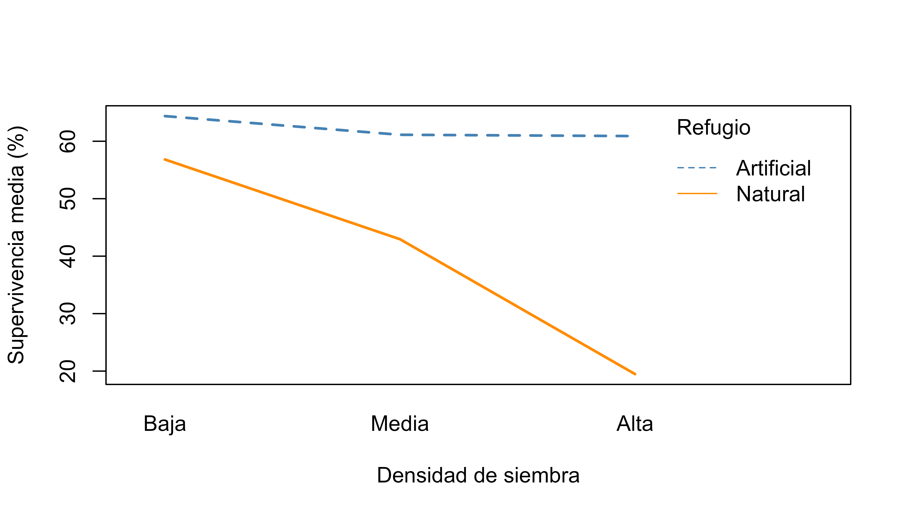
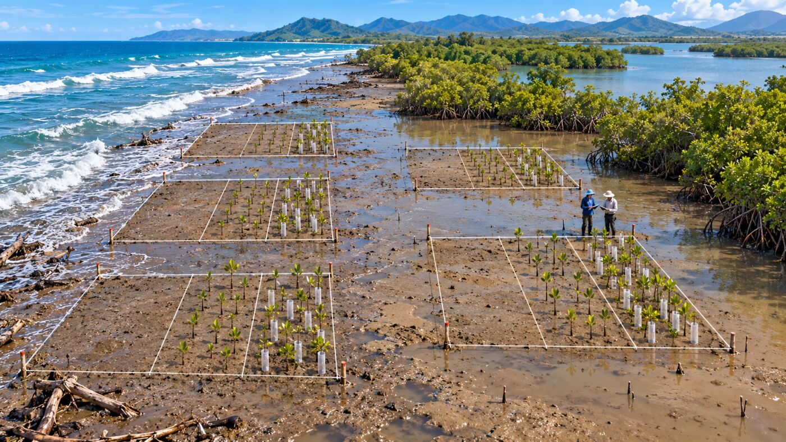

Taller 1. Diseño Experimental
Materiales requeridos para el taller en clase
En los siguientes enlaces se podrán descargar archivos comprimidos de los talleres donde se pueden aplicar procedimientos para la manipulación y organización de las bases de datos requeridas en este taller de diseño experimental, con datos simulados en ecosistemas marinos y estuarinos del Caribe colombiano (📰 Taller1. Diseño Exp.).
Nota: una vez se descarguen los materiales, se requiere descomprimirlos antes de realizar cualquier procedimiento y seguir las orientaciones del docente para realizar los ejercicios requeridos.
Diapositivas en vivo - Slides.com

Objetivos del taller
Este taller acompaña la sesión de diapositivas “Principios y Tipos de Diseño Experimental” (RA1). Al finalizar, se estará en capacidad de:
- Aplicar en R los 4 principios del diseño experimental: aleatorización, replicación, control y bloqueo.
- Simular y analizar en R los 4 tipos de diseño vistos en clase: completamente al azar, bloques al azar, factorial y parcelas divididas.
- Reconocer, antes de correr cualquier análisis, qué estructura tiene el diseño — porque de eso depende qué modelo estadístico usar.
Cada sección usa un dataset simulado, inspirado en líneas de investigación reales del grupo (bentos, pesquerías, langosta espinosa, manglares), para que el código resulte transferible a un proyecto de investigación propio.
Nota
Los datos de este taller son simulados (set.seed() fija la semilla, así que a todos les da exactamente lo mismo). No corresponden a mediciones reales de ningún estudio; están construidos para ilustrar cada diseño con claridad pedagógica.
Antes de empezar
Todo el taller corre con R base — no es necesario instalar nada adicional. Si ya está tidyverse instalado (recomendado para el resto del curso), así como el paquete gráfico ggplot2, el paquete de carga de bases de datos readxl y el de edición y presentación de tablas kableExtra.
Cargar librerías requeridas
Código
# Librerías requeridas
library(tidyverse) # Para la manipulación de datos
library(dplyr) # Para ejecutar algunos comandos de tidy
library(kableExtra) # Para la edición de tablas
library(broom) # Para la edición de tablas con tidy
library(readxl) # Cargar bases de ExcelA continuación se genera una muestra aleatoria con el comando set.seed(), para poder reproducir datos hipotéticos y contrastable en el ejercicio.
Código
# Si tidyverse está instalado, descomentar la siguiente línea:
# library(tidyverse)
set.seed(2026) # fija la semilla para que los resultados sean reproduciblesParte 0 — Aleatorización en la práctica
Antes de analizar nada, se practica el principio 1: seleccionar unidades al azar en vez de “a mano”.
Se plantea el caso de un estudio de comunidades bentónicas de fondos blandos, con 20 puntos candidatos de muestreo, de los cuales solo es posible visitar 8.
Código
sitios_candidatos <- paste0("P", 1:20)
sitios_seleccionados <- sort(sample(sitios_candidatos, size = 8))
sitios_seleccionados[1] "P1" "P11" "P12" "P13" "P15" "P4" "P5" "P6" Cada vez que se ejecute esta línea sin fijar la semilla, se obtendrá una selección distinta — así es como debe ser: ni quien ejecuta el análisis ni un evaluador externo puede acusar a la muestra de estar sesgada por conveniencia.
También es posible usar sample() para aleatorizar la asignación de tratamientos a unidades experimentales ya organizadas físicamente (por ejemplo, tanques en una fila):
Código
TRAT <- gl(4, 6, 24, labels = c("A", "B", "C", "D"))
asignacion <- matrix(sample(as.character(TRAT)), nrow = 4)
asignacion [,1] [,2] [,3] [,4] [,5] [,6]
[1,] "B" "C" "A" "A" "A" "A"
[2,] "A" "C" "D" "B" "B" "D"
[3,] "D" "D" "D" "C" "B" "C"
[4,] "C" "B" "D" "A" "C" "B" Cada celda de esta matriz representa una posición física (p. ej. una fila y columna de tanques); el tratamiento que le tocó a cada una salió por sorteo, no por decisión del investigador.
Parte 1 — Diseño completamente al azar: riqueza de macroalgas

Pregunta: ¿la riqueza de macroalgas difiere entre 4 sitios de sustrato rocoso similar?
Como los 4 sitios son razonablemente homogéneos (no hay una fuente de variación conocida que controlar), un diseño completamente al azar (CA) es apropiado: 6 cuadrantes por sitio, asignados sin ninguna restricción adicional.
Código
set.seed(2026) # Fijar la semilla
sitio <- gl(4, 6,
labels = c("A", "B", "C", "D")) # Crea sitios
medias_sitio <- c(12, 14, 13, 15)[as.integer(sitio)] # Asigna medias
riqueza <- round(
rnorm(24, mean = medias_sitio, sd = 2)) # Genera riqueza
macroalgas <- data.frame(sitio, riqueza) # Crea tabla
# Tabla de datos
head(macroalgas, 10) %>%
kbl(booktabs = F, longtable = FALSE, digits = 2) %>%
kable_classic(full_width = F, html_font = "Cambria") %>%
kableExtra::row_spec(0, bold = TRUE)| sitio | riqueza |
|---|---|
| A | 13 |
| A | 10 |
| A | 12 |
| A | 12 |
| A | 11 |
| A | 7 |
| B | 13 |
| B | 12 |
| B | 14 |
| B | 13 |
Código
str(macroalgas) # Explora estructura 'data.frame': 24 obs. of 2 variables:
$ sitio : Factor w/ 4 levels "A","B","C","D": 1 1 1 1 1 1 2 2 2 2 ...
$ riqueza: num 13 10 12 12 11 7 13 12 14 13 ...Como siempre, primero se grafica:
Código
boxplot(riqueza ~ sitio,
data = macroalgas, col = "lightblue",
xlab = "Sitio", ylab = "Riqueza de macroalgas (spp.)")
TipVersión con
ggplot2
Código
ggplot(macroalgas, aes(x = sitio, y = riqueza)) +
geom_boxplot(fill = "lightblue") +
labs(x = "Sitio", y = "Riqueza de macroalgas (spp.)") +
theme_bw()Y ahora el ANOVA de una vía:
Código
# Ajustar el modelo ANOVA:
# ¿La riqueza promedio difiere entre los sitios?
mod_ca <- aov(riqueza ~ sitio, data = macroalgas)
# Ver el resultado estadístico del ANOVA
summary(mod_ca) Df Sum Sq Mean Sq F value Pr(>F)
sitio 3 44.33 14.78 3.561 0.0326 *
Residuals 20 83.00 4.15
---
Signif. codes: 0 '***' 0.001 '**' 0.01 '*' 0.05 '.' 0.1 ' ' 1Código
# Preparar la tabla de ANOVA para presentarla de forma más clara
tabla_anova <-
broom::tidy(mod_ca) %>%
rename(
Fuente = term,
gl = df,
`SC` = sumsq,
`CM` = meansq,
`F` = statistic,
`p` = p.value
) %>%
mutate(
# La fila de residuos no tiene estadístico F ni valor p
F = ifelse(is.na(F), "-", sprintf("%.2f", F)),
p = ifelse(is.na(p), "-", sprintf("%.2f", p))
)
# Mostrar la tabla de ANOVA con formato
tabla_anova %>%
kbl(digits = 2) %>%
kable_classic(full_width = FALSE,
html_font = "Cambria") %>%
row_spec(0, bold = TRUE)| Fuente | gl | SC | CM | F | p |
|---|---|---|---|---|---|
| sitio | 3 | 44.33 | 14.78 | 3.56 | 0.03 |
| Residuals | 20 | 83.00 | 4.15 | - | - |
Código
# Comparaciones múltiples de Tukey:
# ¿Qué pares de sitios presentan diferencias en la riqueza?
tukey_ca <- TukeyHSD(mod_ca)
# Mostrar los resultados de las comparaciones múltiples
tukey_ca Tukey multiple comparisons of means
95% family-wise confidence level
Fit: aov(formula = riqueza ~ sitio, data = macroalgas)
$sitio
diff lwr upr p adj
B-A 2.1666667 -1.1253075 5.458641 0.2838204
C-A 2.0000000 -1.2919741 5.291974 0.3494649
D-A 3.8333333 0.5413592 7.125307 0.0188972
C-B -0.1666667 -3.4586408 3.125307 0.9989493
D-B 1.6666667 -1.6253075 4.958641 0.5037771
D-C 1.8333333 -1.4586408 5.125307 0.4233027Código
# Preparar la tabla de Tukey para presentarla de forma más clara
tabla_tukey <-
tukey_ca %>%
broom::tidy() %>%
rename(
Comp = contrast,
Dif. = estimate,
`IC 95% inf.` = conf.low,
`IC 95% sup.` = conf.high,
`p ajus.` = adj.p.value
)
# Mostrar la tabla de comparaciones múltiples con formato
tabla_tukey %>%
kbl(digits = 2) %>%
kable_classic(full_width = FALSE,
html_font = "Cambria") %>%
row_spec(0, bold = TRUE)| term | Comp | null.value | Dif. | IC 95% inf. | IC 95% sup. | p ajus. |
|---|---|---|---|---|---|---|
| sitio | B-A | 0 | 2.17 | -1.13 | 5.46 | 0.28 |
| sitio | C-A | 0 | 2.00 | -1.29 | 5.29 | 0.35 |
| sitio | D-A | 0 | 3.83 | 0.54 | 7.13 | 0.02 |
| sitio | C-B | 0 | -0.17 | -3.46 | 3.13 | 1.00 |
| sitio | D-B | 0 | 1.67 | -1.63 | 4.96 | 0.50 |
| sitio | D-C | 0 | 1.83 | -1.46 | 5.13 | 0.42 |
Para discutir: ¿cuál es la unidad experimental? ¿Y la unidad de observación? (Pista: revisar la diapositiva 4 de la sesión anterior en caso de dudas.)
Parte 2 — Diseño de bloques al azar: artes de pesca por temporada

Pregunta: ¿la abundancia capturada difiere entre 3 artes de pesca?
Se sabe que la abundancia de peces varía con la temporada (seca vs. lluviosa). Esa variación no es lo que se quiere responder, pero si no se controla se suma al error y hace más difícil detectar diferencias entre artes. Por eso se usa un diseño de bloques completos al azar:
- Bloque: temporada (seca, lluviosa).
- Tratamiento: arte de pesca (red agallera, palangre, trampa).
- Respuesta: abundancia capturada (individuos por faena).
- Unidad experimental: la faena de pesca.
En cada temporada se realizan 15 faenas y a cada una se le asigna un arte por sorteo, con la condición de que los 3 artes queden con 5 faenas cada uno. Así, cada bloque contiene todos los tratamientos (bloque completo) y la asignación dentro del bloque es aleatoria (bloque al azar).
Paso 1. Sorteo de los artes dentro de cada temporada
Código
set.seed(2026) # Fija la semilla
artes <- c("Red_agallera", "Palangre", "Trampa") # Define tratamientos
# Plan de campo: 15 faenas en cada temporada (bloque)
pesca <- data.frame(
temporada = factor(rep(c("Seca", "Lluviosa"), each = 15),
levels = c("Seca", "Lluviosa")), # Crea bloques
faena = rep(1:15, times = 2) # Numera faenas
)
# Sorteo independiente dentro de cada temporada (5 faenas por arte)
pesca$arte <- factor(
c(sample(rep(artes, each = 5)), # Sortea en seca
sample(rep(artes, each = 5))), # Sortea en lluviosa
levels = artes # Fija orden de niveles
)El resultado del sorteo se organiza como un plan de campo: cada fila es una faena y cada columna una temporada. Así se ve en qué faena se usará cada arte:
Código
# Reorganizar el sorteo: faenas en filas, temporadas en columnas
plan_campo <- pesca %>%
select(temporada, faena, arte) %>% # Selecciona columnas
pivot_wider(names_from = temporada,
values_from = arte) # Pasa a formato ancho (tidyr)Código
# Mostrar el plan de campo con formato
plan_campo %>%
kbl(col.names = c("Faena", "Temporada seca",
"Temporada lluviosa")) %>%
kable_classic(full_width = FALSE, html_font = "Cambria") %>%
row_spec(0, bold = TRUE)| Faena | Temporada seca | Temporada lluviosa |
|---|---|---|
| 1 | Trampa | Trampa |
| 2 | Palangre | Red_agallera |
| 3 | Red_agallera | Trampa |
| 4 | Palangre | Palangre |
| 5 | Trampa | Palangre |
| 6 | Red_agallera | Red_agallera |
| 7 | Red_agallera | Trampa |
| 8 | Palangre | Red_agallera |
| 9 | Palangre | Palangre |
| 10 | Red_agallera | Red_agallera |
| 11 | Trampa | Palangre |
| 12 | Palangre | Trampa |
| 13 | Red_agallera | Red_agallera |
| 14 | Trampa | Palangre |
| 15 | Trampa | Trampa |
Para observar: dentro de cada temporada los artes aparecen en un orden distinto y sin patrón. Ninguno quedó concentrado al inicio o al final de la temporada por decisión del investigador: eso es lo que garantiza la aleatorización dentro del bloque.
Se verifica que el diseño quedó completo y balanceado:
Código
table(pesca$temporada, pesca$arte) # Cuenta réplicas por celda
Red_agallera Palangre Trampa
Seca 5 5 5
Lluviosa 5 5 5Es decir, 2 bloques × 3 artes × 5 réplicas = 30 unidades experimentales.
Advertencia
Ojo con el orden de los niveles. factor() ordena los niveles alfabéticamente por defecto (Palangre, Red_agallera, Trampa). Por eso se fija levels = artes: en el paso siguiente los efectos se asignan por posición con as.integer(), y sin ese argumento el efecto pensado para la red agallera quedaría asignado al palangre sin ningún mensaje de error.
Paso 2. Simulación de la abundancia
Como los datos son simulados, los efectos se fijan de antemano: respecto a la red agallera, el palangre captura en promedio 4 individuos más y la trampa 3 menos; la temporada lluviosa suma 12 individuos a cualquier arte. En un estudio real estos valores son desconocidos: son justamente lo que el análisis intenta estimar.
Código
efecto_arte <- c(0, 4, -3)[as.integer(pesca$arte)] # Efecto de cada arte
efecto_temporada <- c(0, 12)[as.integer(pesca$temporada)] # Efecto de cada bloque
# Abundancia = media base + efectos + error aleatorio (sd = 3)
pesca$abundancia <- round(
rnorm(30, mean = 20 + efecto_arte + efecto_temporada,
sd = 3)) # Genera abundancia
str(pesca) # Explora estructura'data.frame': 30 obs. of 4 variables:
$ temporada : Factor w/ 2 levels "Seca","Lluviosa": 1 1 1 1 1 1 1 1 1 1 ...
$ faena : int 1 2 3 4 5 6 7 8 9 10 ...
$ arte : Factor w/ 3 levels "Red_agallera",..: 3 2 1 2 3 1 1 2 2 1 ...
$ abundancia: num 15 26 19 24 13 24 20 30 29 20 ...Las primeras filas de la base de datos:
Código
# Tabla de datos
head(pesca, 10) %>%
kbl(booktabs = F, longtable = FALSE, digits = 2) %>%
kable_classic(full_width = F, html_font = "Cambria") %>%
kableExtra::row_spec(0, bold = TRUE)| temporada | faena | arte | abundancia |
|---|---|---|---|
| Seca | 1 | Trampa | 15 |
| Seca | 2 | Palangre | 26 |
| Seca | 3 | Red_agallera | 19 |
| Seca | 4 | Palangre | 24 |
| Seca | 5 | Trampa | 13 |
| Seca | 6 | Red_agallera | 24 |
| Seca | 7 | Red_agallera | 20 |
| Seca | 8 | Palangre | 30 |
| Seca | 9 | Palangre | 29 |
| Seca | 10 | Red_agallera | 20 |
Como siempre, primero se grafica:
Código
par(mfrow = c(1, 2)) # Divide en 2 paneles
boxplot(abundancia ~ arte, data = pesca, col = "lightblue",
xlab = "Arte de pesca",
ylab = "Abundancia (ind./faena)") # Abundancia por arte
boxplot(abundancia ~ temporada, data = pesca, col = "khaki",
xlab = "Temporada",
ylab = "Abundancia (ind./faena)") # Abundancia por temporada
Código
par(mfrow = c(1, 1)) # Restablece 1 panelPara observar: ¿qué factor genera más variación en la abundancia, el arte o la temporada?
Paso 3. Análisis sin bloqueo y con bloqueo
Se compara qué ocurre si no se controla la temporada frente a lo que ocurre si sí se controla.
Modelo sin bloqueo
Código
# ANOVA sin bloqueo: la variación de la temporada queda en el error
mod_sin_bloque <- aov(abundancia ~ arte, data = pesca) # Ajusta el modelo
summary(mod_sin_bloque) # Muestra el ANOVA Df Sum Sq Mean Sq F value Pr(>F)
arte 2 498.9 249.43 6.064 0.00668 **
Residuals 27 1110.6 41.13
---
Signif. codes: 0 '***' 0.001 '**' 0.01 '*' 0.05 '.' 0.1 ' ' 1Código
# Preparar la tabla de ANOVA sin bloqueo
tabla_sin_bloque <-
broom::tidy(mod_sin_bloque) %>% # Convierte a tabla
rename(
Fuente = term, # Fuente de variación
gl = df, # Grados de libertad
`SC` = sumsq, # Suma de cuadrados
`CM` = meansq, # Cuadrado medio
`F` = statistic, # Estadístico F
`p` = p.value # Valor p
) %>%
mutate(
F = ifelse(is.na(F), "-", sprintf("%.2f", F)), # Residuos sin F
p = ifelse(is.na(p), "-",
format.pval(p, digits = 3, eps = 0.001)) # Residuos sin p
)Código
# Mostrar la tabla con formato
tabla_sin_bloque %>%
kbl(digits = 2) %>%
kable_classic(full_width = FALSE, html_font = "Cambria") %>%
row_spec(0, bold = TRUE)| Fuente | gl | SC | CM | F | p |
|---|---|---|---|---|---|
| arte | 2 | 498.87 | 249.43 | 6.06 | 0.00668 |
| Residuals | 27 | 1110.60 | 41.13 | - | - |
Modelo con bloqueo
Código
# ANOVA con bloqueo: la temporada se separa del error
mod_bloques <- aov(abundancia ~ arte + temporada,
data = pesca) # Ajusta el modelo
summary(mod_bloques) # Muestra el ANOVA Df Sum Sq Mean Sq F value Pr(>F)
arte 2 498.9 249.4 38.19 1.83e-08 ***
temporada 1 940.8 940.8 144.06 4.17e-12 ***
Residuals 26 169.8 6.5
---
Signif. codes: 0 '***' 0.001 '**' 0.01 '*' 0.05 '.' 0.1 ' ' 1Código
# Preparar la tabla de ANOVA con bloqueo
tabla_bloques <-
broom::tidy(mod_bloques) %>% # Convierte a tabla
rename(
Fuente = term, # Fuente de variación
gl = df, # Grados de libertad
`SC` = sumsq, # Suma de cuadrados
`CM` = meansq, # Cuadrado medio
`F` = statistic, # Estadístico F
`p` = p.value # Valor p
) %>%
mutate(
F = ifelse(is.na(F), "-", sprintf("%.2f", F)), # Residuos sin F
p = ifelse(is.na(p), "-",
format.pval(p, digits = 3, eps = 0.001)) # Residuos sin p
)Código
# Mostrar la tabla con formato
tabla_bloques %>%
kbl(digits = 2) %>%
kable_classic(full_width = FALSE, html_font = "Cambria") %>%
row_spec(0, bold = TRUE)| Fuente | gl | SC | CM | F | p |
|---|---|---|---|---|---|
| arte | 2 | 498.87 | 249.43 | 38.19 | <0.001 |
| temporada | 1 | 940.80 | 940.80 | 144.06 | <0.001 |
| Residuals | 26 | 169.80 | 6.53 | - | - |
Paso 4. ¿Qué cambió al introducir el bloque?
Se ponen lado a lado los valores clave de ambos modelos:
Código
# Extraer las tablas de ANOVA de cada modelo
t_sin <- summary(mod_sin_bloque)[[1]] # ANOVA sin bloqueo
t_con <- summary(mod_bloques)[[1]] # ANOVA con bloqueo
# Reunir los valores clave en una sola tabla
comparacion <- data.frame(
Modelo = c("Sin bloqueo", "Con bloqueo"),
`SC arte` = c(t_sin["arte", "Sum Sq"],
t_con["arte", "Sum Sq"]), # Señal del arte
`CM residual` = c(t_sin["Residuals", "Mean Sq"],
t_con["Residuals", "Mean Sq"]), # Ruido (error)
`F arte` = c(t_sin["arte", "F value"],
t_con["arte", "F value"]), # Señal / ruido
`p arte` = format.pval(c(t_sin["arte", "Pr(>F)"],
t_con["arte", "Pr(>F)"]),
digits = 3, eps = 0.001), # Valor p del arte
check.names = FALSE # Respeta espacios
)Código
# Mostrar la tabla comparativa con formato
comparacion %>%
kbl(digits = 2) %>%
kable_classic(full_width = FALSE, html_font = "Cambria") %>%
row_spec(0, bold = TRUE)| Modelo | SC arte | CM residual | F arte | p arte |
|---|---|---|---|---|
| Sin bloqueo | 498.87 | 41.13 | 6.06 | 0.00668 |
| Con bloqueo | 498.87 | 6.53 | 38.19 | < 0.001 |
Nótese la diferencia: la SC del arte es idéntica en los dos modelos (498.9): el bloqueo no cambia la señal del tratamiento. Lo que cambia es el ruido. Sin bloqueo, la variación entre temporadas (SC = 940.8) queda sumada al error y el CM residual es 41.13. Al incluir la temporada como bloque, esa variación se separa del error y el CM residual baja a 6.53. Como F = CM del arte / CM residual, el F del arte pasa de 6.06 a 38.19: el efecto del arte se estima con mucha más precisión.
Tip
El bloqueo no “crea” efectos ni “descubre el efecto verdadero”. En estos datos simulados el efecto del arte existe porque se introdujo en la simulación. Lo que hace el bloqueo es reducir el error residual, de modo que ese efecto se detecta con más claridad y se estima con intervalos más estrechos.
Paso 5. ¿Fue cuestión de suerte? Potencia por simulación
Un solo conjunto de datos simulados puede salir “favorable” o “desfavorable” por azar. Por eso, el valor p de una sola muestra no mide la potencia del diseño: obtener un p bajo en un experimento no significa que el diseño sea potente.
Para evaluar la capacidad del diseño de detectar el efecto especificado, se repite el mismo experimento 1000 veces (mismo sorteo dentro de bloques y mismo proceso generador de datos del Paso 2) y se calcula la proporción de análisis en los que p < 0.05. Esa proporción es la potencia de la prueba bajo los parámetros de esta simulación (ver sesión de potencia y tamaño de muestra).
Código
# Función que repite el experimento completo y devuelve
# el valor p del arte con y sin bloqueo
simular_experimento <- function() {
d <- data.frame(
temporada = factor(rep(c("Seca", "Lluviosa"), each = 15),
levels = c("Seca", "Lluviosa")), # Crea bloques
arte = factor(c(sample(rep(artes, each = 5)),
sample(rep(artes, each = 5))),
levels = artes) # Sortea artes
)
# Mismo proceso generador del Paso 2 (incluye el redondeo)
d$abundancia <- round(
rnorm(30, mean = 20 +
c(0, 4, -3)[as.integer(d$arte)] +
c(0, 12)[as.integer(d$temporada)],
sd = 3)) # Genera abundancia
p_sin <- summary(aov(abundancia ~ arte,
d))[[1]]["arte", "Pr(>F)"] # p sin bloque
p_con <- summary(aov(abundancia ~ arte + temporada,
d))[[1]]["arte", "Pr(>F)"] # p con bloque
c(sin_bloqueo = p_sin, con_bloqueo = p_con) # Devuelve ambos p
}
set.seed(2026) # Fija la semilla
valores_p <- replicate(1000, simular_experimento()) # Repite 1000 veces
potencia <- rowMeans(valores_p < 0.05) # Proporción con p < 0.05
round(potencia, 3) # Muestra la potenciasin_bloqueo con_bloqueo
0.294 0.997 Sin bloqueo, el efecto del arte se detecta en cerca del 29.4 % de los experimentos; con bloqueo, en el 99.7 %. Con el mismo esfuerzo de muestreo (30 faenas), el bloqueo aumenta considerablemente la potencia para detectar el efecto del arte bajo las condiciones simuladas.
Nótese además que el ANOVA sin bloqueo del Paso 3 dio p = 0.0067: ese experimento particular detectó el efecto, pero el diseño sin bloqueo solo lo detecta en cerca del 29.4 % de las repeticiones. Un resultado significativo no garantiza que el diseño tenga buena potencia.
Nota
Estos porcentajes no son una propiedad general del bloqueo: dependen de los valores elegidos para la simulación (tamaño de los efectos del arte, magnitud del efecto de la temporada, desviación estándar del error, número de bloques y de réplicas). Lo que sí es general es el principio: bloquear una fuente importante de variación reduce el error residual y, con ello, aumenta la precisión y la potencia. Para explorar: cambiar el efecto de la temporada de 12 a 2 en la función y volver a correrla. ¿Qué pasa con la ventaja del bloqueo?
Paso 6. ¿El efecto del arte es el mismo en ambas temporadas?
El modelo de bloques abundancia ~ arte + temporada supone que la diferencia entre artes no cambia según la temporada: si el palangre captura 4 individuos más que la red agallera en la seca, también lo hace en la lluviosa. A esto se le llama supuesto de aditividad, y su contrario es una interacción arte × temporada. Como este diseño tiene 5 réplicas de cada arte dentro de cada temporada, esa posibilidad se puede evaluar incorporando la interacción al modelo:
Código
# El operador * incluye arte, temporada y su interacción (arte:temporada)
mod_interaccion <- aov(abundancia ~ arte * temporada,
data = pesca) # Ajusta el modelo
summary(mod_interaccion) # Revisa arte:temporada Df Sum Sq Mean Sq F value Pr(>F)
arte 2 498.9 249.4 38.873 2.97e-08 ***
temporada 1 940.8 940.8 146.618 1.04e-11 ***
arte:temporada 2 15.8 7.9 1.231 0.31
Residuals 24 154.0 6.4
---
Signif. codes: 0 '***' 0.001 '**' 0.01 '*' 0.05 '.' 0.1 ' ' 1Si no se encuentra evidencia de interacción arte:temporada, el modelo aditivo es compatible con los datos. Ojo: un valor p alto no demuestra que la interacción sea cero; solo indica que estos datos no permiten detectarla. Si se encuentra evidencia de interacción, el efecto del arte depende de la temporada y ya no es apropiado resumirlo con un único efecto promedio: habría que interpretarlo por separado en cada temporada. Esa idea de efectos que dependen de otro factor es justamente el tema del diseño factorial (Parte 3).
Para discutir:
- ¿Por qué la temporada se trata como bloque y no como un segundo tratamiento? (Pista: ¿se puede asignar la temporada al azar a una faena?)
- Si las faenas se hicieran en un solo año, ¿a qué se podría generalizar el efecto de la temporada? ¿Qué cambiaría en el diseño para poder hablar de “las temporadas” en general?
Parte 3 — Diseño factorial: refugio × densidad en langosta espinosa

Pregunta: ¿el tipo de refugio y la densidad de siembra afectan la supervivencia de juveniles, y —lo más interesante— depende el efecto del refugio de qué tan alta sea la densidad?
Este es el tipo de pregunta que un diseño factorial responde mejor que dos experimentos separados: cruzamos refugio (artificial / natural) × densidad (baja / media / alta), con 4 réplicas (tanques) por combinación.
Código
set.seed(2026) # Fijar la semilla
refugio <- gl(2, 4, 24,
labels = c("Artificial", "Natural")) # Crea refugios
densidad <- gl(3, 8, 24,
labels = c("Baja", "Media", "Alta")) # Crea densidades
# Matriz de medias esperadas (supervivencia %) por combinación
mu <- matrix(c(65, 63, 60,
63, 45, 20),
nrow = 2, byrow = TRUE,
dimnames = list(c("Artificial", "Natural"),
c("Baja", "Media", "Alta"))) # Define medias
mu # Muestra matriz Baja Media Alta
Artificial 65 63 60
Natural 63 45 20Código
medias <- mu[
cbind(as.integer(refugio), as.integer(densidad))
] # Asigna medias
supervivencia <- round(
pmin(100, pmax(0,
rnorm(24, mean = medias, sd = 5)
)), 1
) # Genera supervivencia
langosta <- data.frame(
refugio,
densidad,
supervivencia
) # Crea tablaCódigo
with(langosta,
tapply(supervivencia,
list(refugio, densidad),
mean)) # Medias por combinación Baja Media Alta
Artificial 64.375 61.125 60.900
Natural 56.825 42.950 19.475Código
interaction.plot(langosta$densidad,
langosta$refugio,
langosta$supervivencia,
xlab = "Densidad de siembra",
ylab = "Supervivencia media (%)",
trace.label = "Refugio",
col = c("steelblue", "darkorange"), lwd = 2)
TipVersión con
ggplot2
Código
langosta_resumen <- aggregate(supervivencia ~ refugio +
densidad, data = langosta, mean)
# Figura
ggplot(langosta_resumen, aes(x = densidad, y = supervivencia,
color = refugio, group = refugio)) +
geom_line(linewidth = 1) +
geom_point(size = 3) +
labs(x = "Densidad de siembra", y = "Supervivencia media (%)",
color = "Refugio") +
theme_bw()Código
# anova factorial
mod_fact <- aov(supervivencia ~ refugio * densidad, data = langosta)
# summary(mod_fact)
# Tabulación de los resultados del Anova
broom::tidy(mod_fact) %>%
rename(
Fuente = term,
gl = df,
`SC` = sumsq,
`CM` = meansq,
`F` = statistic,
`p` = p.value
) %>%
mutate(
F = ifelse(is.na(F), "-", sprintf("%.2f", F)),
p = ifelse(is.na(p), "-", format.pval(p, digits = 3, eps = 0.001))
) %>%
kbl(digits = 2) %>%
kable_classic(full_width = FALSE, html_font = "Cambria") %>%
row_spec(0, bold = TRUE)| Fuente | gl | SC | CM | F | p |
|---|---|---|---|---|---|
| refugio | 1 | 3006.08 | 3006.08 | 124.99 | <0.001 |
| densidad | 2 | 1681.09 | 840.55 | 34.95 | <0.001 |
| refugio:densidad | 2 | 1200.65 | 600.32 | 24.96 | <0.001 |
| Residuals | 18 | 432.90 | 24.05 | - | - |
Fíjate en el término refugio:densidad: es significativo. Eso significa que no basta con decir “el refugio artificial es mejor” — hay que decir cuánto mejor depende de la densidad. A baja densidad, ambos refugios rinden parecido; a alta densidad, la brecha se dispara. Esa es la información que un diseño factorial captura y que dos experimentos separados (uno por refugio, otro por densidad) jamás hubieran mostrado.
Parte 4 — Parcelas divididas: restauración de manglares

Pregunta: ¿el tratamiento de restauración afecta el crecimiento de plántulas, y depende esto del nivel de exposición al oleaje del sitio?
Aquí hay una complicación logística real: el nivel de exposición (expuesto / protegido) solo puede asignarse a sitios completos (no es posible que la mitad de un sitio esté “protegida” y la otra mitad “expuesta”). Sin embargo, dentro de cada sitio sí es posible aplicar los 3 tratamientos de restauración a subparcelas distintas. Esta es la firma de un diseño de parcelas divididas: exposición = factor de parcela grande; tratamiento = factor de subparcela.
Código
set.seed(2026) # Fijar la semilla
exposicion <- gl(2, 9, 18,
labels = c("Expuesto", "Protegido")) # Crea exposiciones
sitio2 <- factor(rep(1:6, each = 3)) # Crea sitios
# 6 sitios: 3 por exposición, con 3 subparcelas c/u
tratamiento <- gl(3, 1, 18,
labels = c("Control", "Siembra",
"Fertilizacion")) # Crea tratamientos
efecto_exposicion <- c(0, 10)[as.integer(exposicion)] # Define efectos
efecto_tratamiento <- c(0, 6, 9)[as.integer(tratamiento)] # Define efectos
efecto_sitio <- rep(
rnorm(6, mean = 0, sd = 2),
each = 3
) # Añade variación
crecimiento <- round(
25 + efecto_exposicion + efecto_tratamiento +
efecto_sitio + rnorm(18, sd = 2),
1
) # Genera crecimiento
manglar <- data.frame(
exposicion, sitio2, tratamiento, crecimiento
) # Crea tablaCódigo
# Impresión de la tabla con los datos
manglar %>%
dplyr::select(1:4) %>%
kbl(booktabs = F, longtable = FALSE, digits = 2) %>%
kable_classic(full_width = F, html_font = "Cambria") %>%
kableExtra::row_spec(0, bold = TRUE)| exposicion | sitio2 | tratamiento | crecimiento |
|---|---|---|---|
| Expuesto | 1 | Control | 24.6 |
| Expuesto | 1 | Siembra | 30.0 |
| Expuesto | 1 | Fertilizacion | 35.3 |
| Expuesto | 2 | Control | 21.9 |
| Expuesto | 2 | Siembra | 28.0 |
| Expuesto | 2 | Fertilizacion | 30.4 |
| Expuesto | 3 | Control | 24.8 |
| Expuesto | 3 | Siembra | 30.8 |
| Expuesto | 3 | Fertilizacion | 29.2 |
| Protegido | 4 | Control | 37.5 |
| Protegido | 4 | Siembra | 42.1 |
| Protegido | 4 | Fertilizacion | 44.3 |
| Protegido | 5 | Control | 32.1 |
| Protegido | 5 | Siembra | 41.0 |
| Protegido | 5 | Fertilizacion | 42.0 |
| Protegido | 6 | Control | 29.6 |
| Protegido | 6 | Siembra | 33.2 |
| Protegido | 6 | Fertilizacion | 41.9 |
El análisis de un split-plot necesita dos términos de error distintos: uno para el factor de parcela grande (sitio) y otro para el factor de subparcela. En R, eso se indica con Error():
Código
mod_split <- aov(
crecimiento ~ exposicion * tratamiento + Error(sitio2),
data = manglar
) # Ajusta modelo con error
summary(mod_split) # Muestra ANOVA
Error: sitio2
Df Sum Sq Mean Sq F value Pr(>F)
exposicion 1 437.1 437.1 22.72 0.00886 **
Residuals 4 77.0 19.2
---
Signif. codes: 0 '***' 0.001 '**' 0.01 '*' 0.05 '.' 0.1 ' ' 1
Error: Within
Df Sum Sq Mean Sq F value Pr(>F)
tratamiento 2 238.22 119.11 25.956 0.000318 ***
exposicion:tratamiento 2 3.50 1.75 0.381 0.694867
Residuals 8 36.71 4.59
---
Signif. codes: 0 '***' 0.001 '**' 0.01 '*' 0.05 '.' 0.1 ' ' 1Obsérvese que el resultado sale en dos bloques separados (Error: sitio2 y Error: Within). Si se ejecutara un aov() normal sin el término Error(), R usaría un solo error para todo — y eso subestimaría la incertidumbre del factor de parcela grande (exposicion), inflando artificialmente su significancia. Por eso la estructura del diseño determina el modelo, no al revés.
Cierre — El diseño de un estudio propio
Antes de cerrar, se recomienda adaptar este taller a un proyecto propio:
Copiar la sección que más se parezca al diseño identificado en el ejercicio de la sesión de diapositivas:
- Parte 1 — Diseño completamente al azar: riqueza de macroalgas
- Parte 2 — Diseño de bloques al azar: artes de pesca por temporada
- Parte 3 — Diseño factorial: refugio × densidad en langosta espinosa
- Parte 4 — Parcelas divididas: restauración de manglares
que más se parezca al diseño identificado en el ejercicio de la sesión de diapositivas.
Reemplazar los nombres de las variables y los valores de las medias simuladas por lo que se esperaría encontrar en el sistema de estudio propio.
Ejecutar el análisis con los datos simulados propios y revisar: ¿la salida de R tiene sentido con lo planteado?
Esto no reemplaza los datos reales, pero es una forma barata de poner a prueba el diseño antes de salir a campo — el mensaje con el que se abrió la sesión.
Material de apoyo

Para repasar y profundizar después de la sesión:
- Cuestionario 1 · Diseño Experimental y Bioestadística — 10 preguntas de opción múltiple.
- Cuestionario 2 · Diseño Experimental y Bioestadística — Cuestionario que evalúa si se reconoce la respuesta correcta, esta guía entrena dos habilidades necesarias para un proyecto de grado propio.